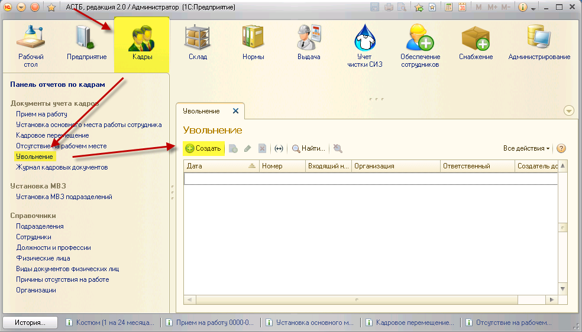
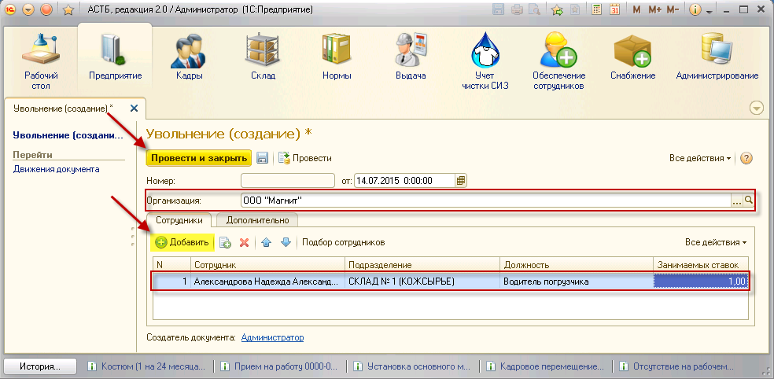

Чтобы уволить сотрудника, необходимо зайти в раздел «Кадры», документ «Увольнение», нажать кнопку «Создать».

В открывшемся окне необходимо выбрать организацию, выбрать сотрудника из списка, заполнить подразделение, должность, рабочее место, ставку, с которой его увольняют, затем нажать кнопку «Провести и закрыть».

Чтобы не заполнять подразделение и должность по каждому сотруднику, нажмите кнопку «Подбор сотрудников». Откроется список сотрудников, в котором с помощью поиска можно найти нужного сотрудника и перетащить его в нижнюю таблицу «Данные для переноса в таблицу», затем нажать кнопку «Перенести в документ». Далее нажать «Провести и закрыть».